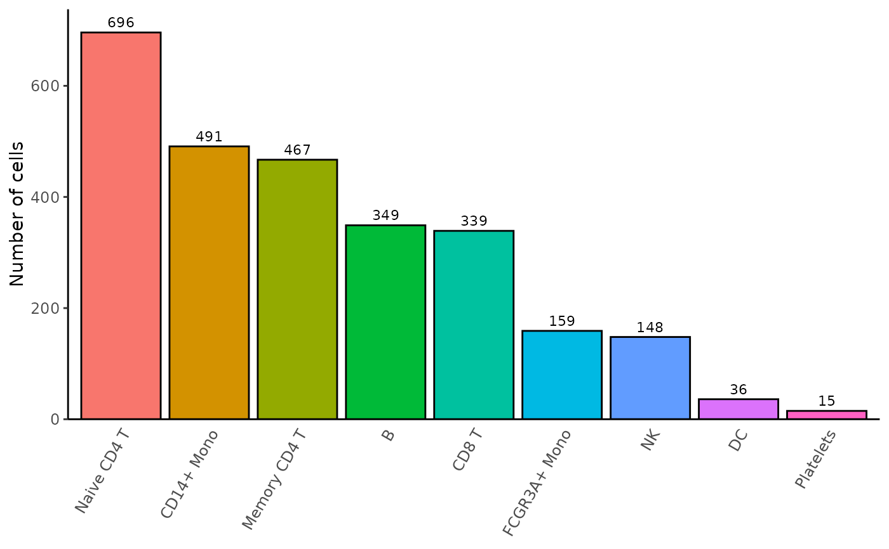

Bar plot of the cell proportions in each identity
Source:R/Barplot_Cell_Proportion.R
Barplot_Cell_Proportion.RdThis function generates a bar plot of the cell proportions from a Seurat object.
Usage
Barplot_Cell_Proportion(
seurat_object,
group.by = NULL,
split.by = NULL,
idents = NULL,
group.idents = NULL,
split.idents = NULL,
colors = NULL,
order.prop = NULL,
order.group = NULL,
order.split = NULL,
order.colors = TRUE,
alpha = 1,
show.cellsum.label = TRUE,
cellsum.label.size = 3,
axis.text.size = 9,
x.axis.angle = 60,
x.axis.hjust = 1,
y.axis.title.size = 11,
legend.text.size = 9,
legend.side = "bottom",
show.legend = TRUE,
split.plot.title.size = 24,
prop.percent = TRUE,
nrow = 1,
unique.group.plot = TRUE,
unique.split.plot = FALSE,
output.data = FALSE
)Arguments
- seurat_object
A Seurat object.
- group.by
Character. The name of a metadata (for example, 'orig.ident', 'seurat_clusters', etc) to group the identities of the active.ident metadata by. Returns a stacked bar plot.
- split.by
Character. The name of a metadata to split the identities of the active.ident metadata by. Returns separate
ggplot2objects.- idents
Character. The names of one or several identities in the active.ident metadata to select. If
NULL, all identities are used.- group.idents
Character. The names of one or several
group.byidentities to select. IfNULL, all identities are used. Ignored ifgroup.by=NULL.- split.idents
Character. The names of one or several
split.byidentities to select. IfNULL, all identities are used. Ignored ifsplit.by=NULL.- colors
Character. The color names for each identity of the active.ident metadata or in
idents. IfNULL, uses Seurat's default colors.- order.prop
Character or Numeric. Either 'reverse', or the identities (as names or as numeric values corresponding to the indices) of the active.ident metadata or in
identsto order the cells.- order.group
Character. Either 'reverse', or the names of the
group.byidentities or ingroup.identsto order the cells. Ignored ifgroup.by=NULL.- order.split
Character. Either 'reverse', or the names of the
split.byidentities or insplit.identsto order the cells. Ignored ifsplit.by=NULL.- order.colors
Logical. If
TRUE, thecolorswill automatically be ordered according toorder.prop. Ignored iforder.prop=NULL.- alpha
Numeric. The transparency of the bar colors. A value between 0 and 1.
- show.cellsum.label
Logical. If
TRUE, the cell sum will be shown at the top of each bar.- cellsum.label.size
Numeric. The font size of the cell sum label. Ignored if
show.cellsum.label=FALSE.- axis.text.size
Numeric. The font size of the identity names and cell percent or count.
- x.axis.angle
Numeric. The rotation angle of the identity names.
- x.axis.hjust
Numeric. The horizontal justification of the identity names.
- y.axis.title.size
Numeric. The font size of the y axis title.
- legend.text.size
Numeric. The font size of the legend text. Ignored if
show.legend=FALSE.- legend.side
Character. The side where the legend will be displayed, either 'left', 'right', 'top' or 'bottom'. Ignored if
show.legend=FALSE.- show.legend
Logical. If
TRUE, shows the legend.- split.plot.title.size
Numeric. The font size of the split plot titles. Ignored if
split.by=NULL.- prop.percent
Logical. If
TRUE, the cell proportions will be shown as a percentage of total cells for each identity. Ignored ifgroup.by=NULL.- nrow
Numeric. The number of rows in the
patchworkobject. Ignored ifgroup.by=NULLandsplit.by=NULL.- unique.group.plot
Logical. If
TRUE, the stacked bar plots will be gathered in a single ggplot2 object. Ignored ifgroup.by=NULL.- unique.split.plot
Logical. If
TRUE, the ggplot2 objects will be gathered in a singlepatchwork. Ignored ifsplit.by=NULL.- output.data
Logical. If
TRUE, the function will return adata.frameobject or alistofdata.frameobjects of the cell proportions, instead of displaying anything.
Value
A ggplot2 object, a list of ggplot2 objects, a patchwork object containing ggplot2 objects or a list of patchwork objects containing ggplot2 objects.
Examples
# Prepare data
pbmc3k <- Right_Data("pbmc3k")
# Example 1: default parameters
Barplot_Cell_Proportion(pbmc3k)
